WURZELWERK · Abnahme
https://engelstraenen.github.io/wurzelwerk/
Je Kapitel: links das Storyboard, Mitte die fertige Seite am Laptop, rechts am Handy. Bild antippen = groß. Grüne Linie = Abweichung vom Storyboard.
Nordseite · März
Panel B1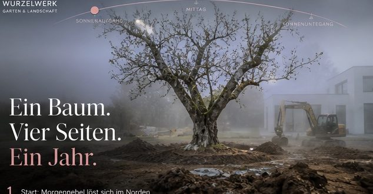
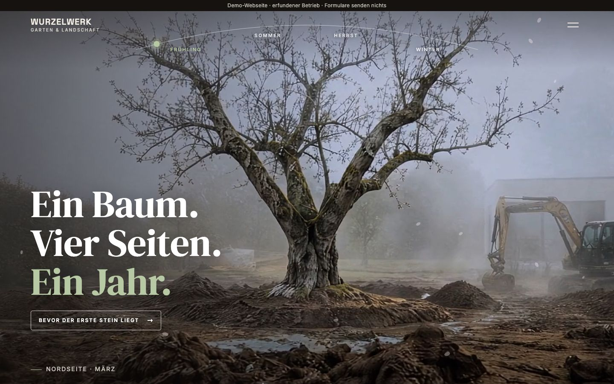

Wie im Storyboard: Morgennebel, kahler Baum, Bagger hinten. Der Film startet genau auf diesem Bild.
Ostseite · April · Schnurgerüst
Panel B2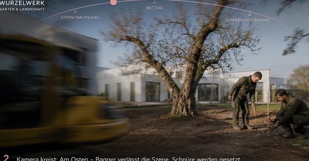

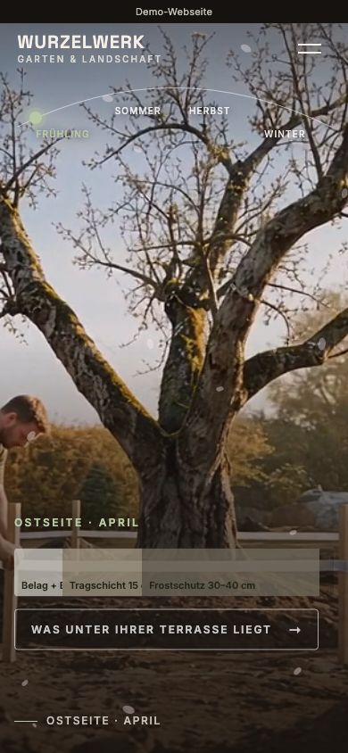
Schnurgerüst und Gärtner wie im Storyboard, aber weiter weg und mit Bagger rechts statt unscharf im Vordergrund (One-Take statt Einzelbild).
Blüte · Mai · Garten neu gestalten
Panel B3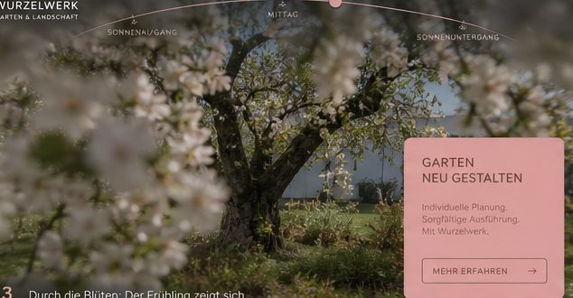


Blüte wie im Storyboard, aber Totale mit neuem Staudenbeet statt Blick durch die Blüten. Karte in Salbei statt Rosé (neue Farbwelt).
Sommer · Juli · Angebot per Foto
Panel B4


Sommer mit Versenkregnern statt einem Regner mit Regenbogen. Neu: Wasser-Diagramm und Foto-Karte mit Schritte-Rechner.
Abendlicht · August · Bewertungen
Panel B5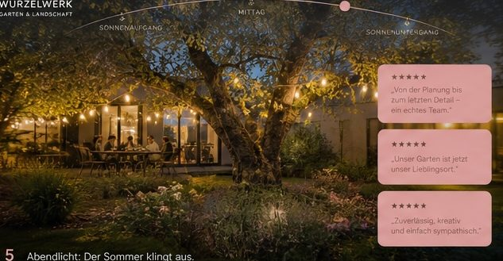
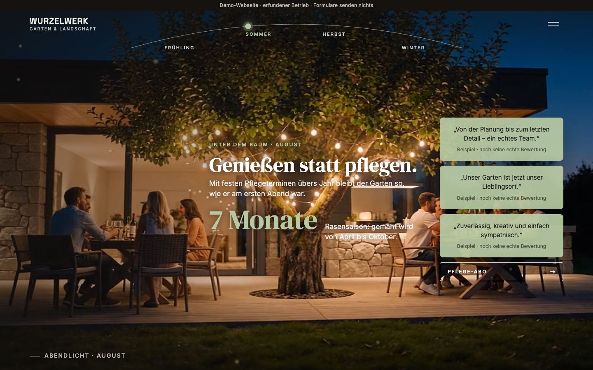
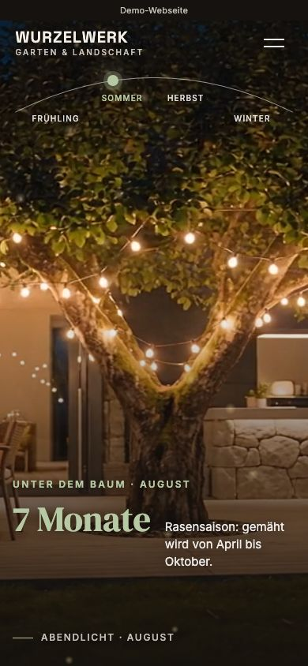
Abend mit Lichterketten wie im Storyboard, Tisch näher am Haus. Bewertungskarten als markierte Beispiele.
Herbstnebel · Oktober
Panel B6


Wie im Storyboard: Herbstnebel, Laubbläser, Leiter am Baum. Krone im Film voller und oranger.
Am Stamm · November · Ausbildung
Panel B7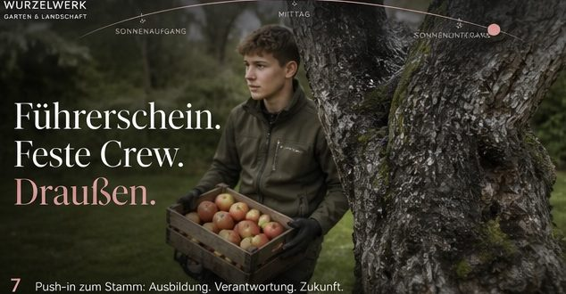

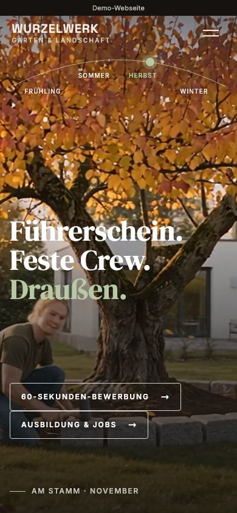
Bewusst anders: Azubi setzt eine Granit-Baumscheibe statt Apfelkiste (Eugen 26.11.: keine Äpfel). Text oben, Azubi frei.
Winter · Januar · Kontakt
Panel B8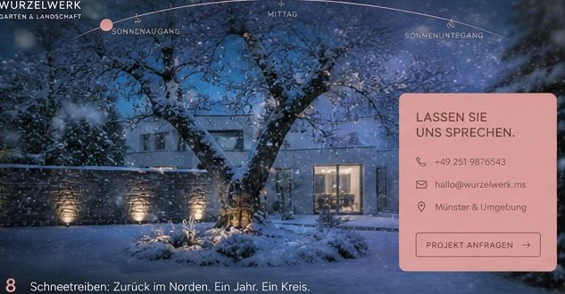
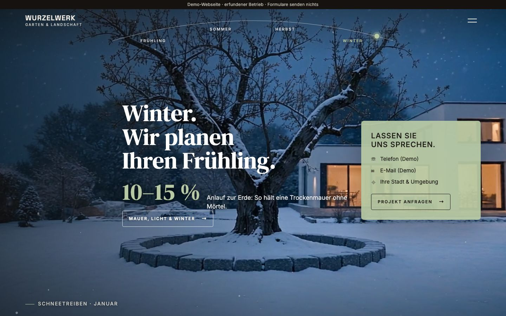
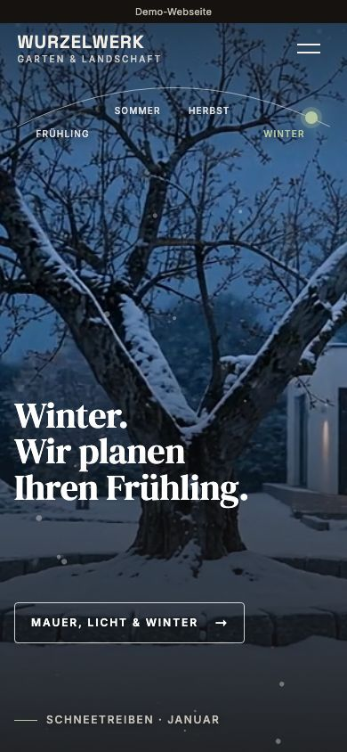
Winter zur blauen Stunde wie im Storyboard, das Haus leuchtet; die beleuchtete Natursteinmauer ist im Film kaum zu sehen.
Zum Einbetten
<iframe src="https://engelstraenen.github.io/wurzelwerk/" width="100%" style="width:100%;height:100vh;border:0" loading="lazy" title="WURZELWERK – Garten- und Landschaftsbau (Demo)"></iframe>
Offen
- Der One-Take ist ein kostenloser 720P-Entwurf. Hochskalieren oder 2K erst nach deinem OK (kostet Credits).
- Geprüft nur headless (Laptop + 4 Handygrößen), nicht auf einem echten Handy.